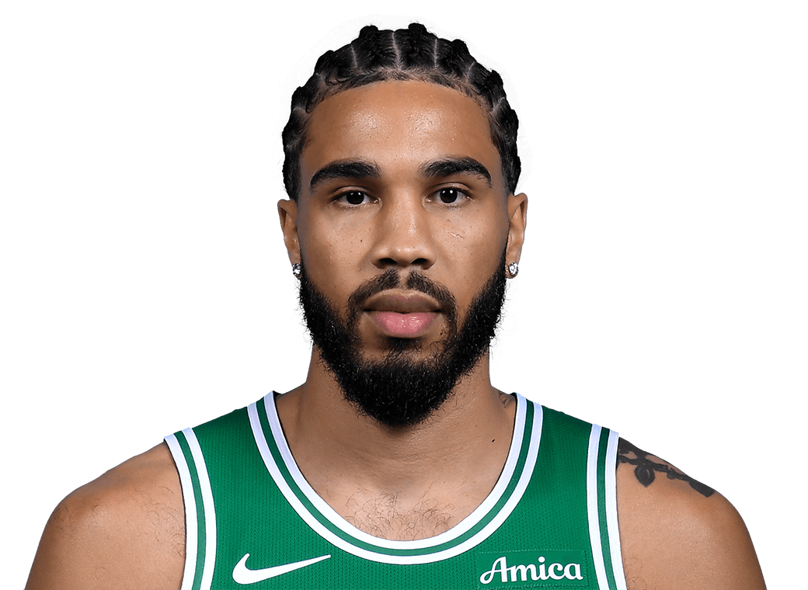
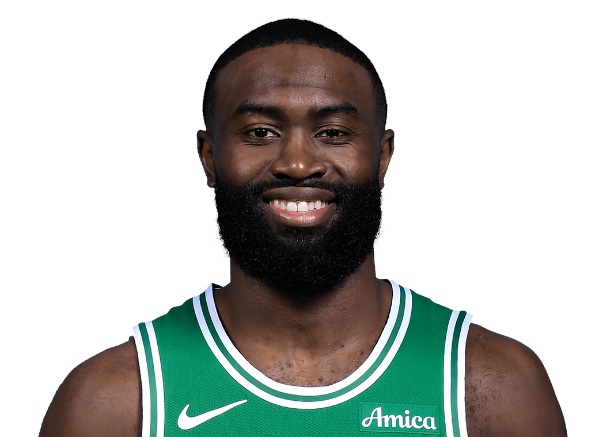

E1v8
活塞0
魔术0
东部上半区已经开打，尼克斯先下一城，而波士顿这组仍停留在 0 比 0 的起跑线。
 波士顿
波士顿
2 号种子 · TD Garden
 费城
费城
7 号种子 · 美东 13:00
76 人通过附加赛证明自己还活着，但首轮一上来就撞上东部 2 号种子，这让热度和难度同时拉满。
凯尔特人的真正优势不是某一名球星更强，而是首发到轮换都能维持攻守平衡，能让费城每个回合都持续做选择。
76 人要把比赛拖进自己的节奏，必须先靠马克西或乔治打穿第一拍，让波士顿的弱侧轮转提前暴露。
如果恩比德不能稳定撑起中轴，费城就会从一支有层次的球队变成更多依赖外线爆点的球队。


马克西和乔治需要先逼出协防，再决定是自己终结还是把球送到第二侧。
凯尔特人会优先压缩马克西的第一步和中路推进；76 人则要找到能逼出波士顿弱侧协防的持球入口。
如果费城只能靠第一拍单打结束，波士顿更舒服；如果能把球持续送到第二、第三个读秒点，局势就会复杂很多。
当 76 人中轴稳定时，费城是多层决策；中轴一旦虚弱，比赛就容易掉进纯爆点篮球。
这支片子里的分析基于 NBA 官方季后赛系列页、附加赛更新、伤病报告和公开社媒信息，不是凭空编的对位故事。